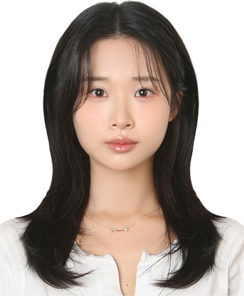

| 이름 | 심현주 |
|---|---|
| 전공 | 화장품학과 (주전공) / 미디어콘텐츠학과 (복수전공) / 제약공학과 (소전공) |
| 학력 | 경성대학교 재학 (23학번 / 2027년 2월 졸업예정) |
| 거주지 | 부산 |
이론에 머무르지 않고 직접 경험하며 성장하는 인재 심현주입니다. 경성대학교 화장품학과(주전공)에서 피부 생리학과 성분 지식을 다지며 메이크업 및 피부미용 국가자격증을 취득하였고, 제약공학과(소전공) 수업을 통해 의약·제약 관련 분야로 도메인 지식을 확장했습니다. 또한 미디어콘텐츠학과(복수전공)를 통해 영상 연출 및 비주얼 기획력을 체득하였습니다. 현재 경성대 K-Move 스쿨 과정을 통해 AI 및 컴퓨터 관련 직무 수업을 수강하며 디지털·IT 역량을 다지는 한편, 글로벌 실무 경험을 다방면으로 확장해 나가고 있습니다.
개인적으로 정말 좋아하는 귀여운 햄스터 영상입니다. 심심할 때 보면 무조건 힐링되는 추천 영상!
youtube.com/WVonh2b0tCY글로벌 직무 역량과 AI·컴퓨터 분야 수업을 병행하며 진행했던 다채롭고 재미있는 팀 프로젝트 모음입니다.
github.com/shj49